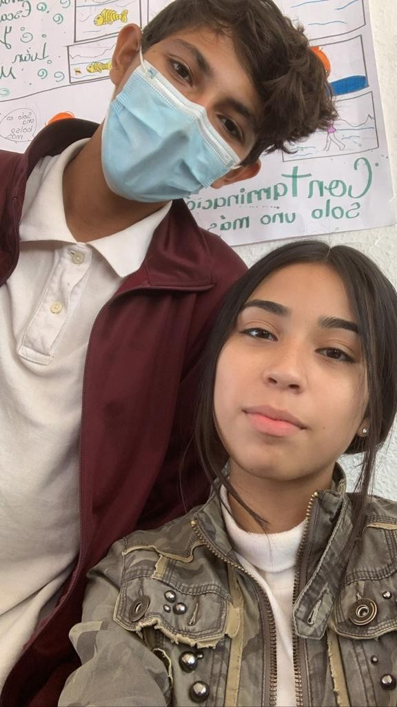
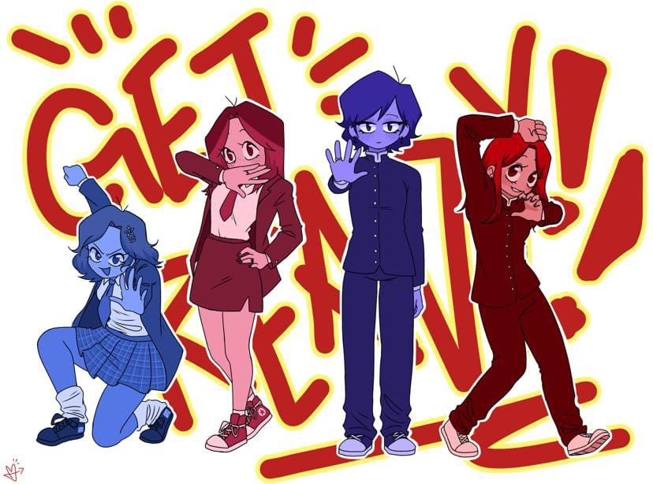
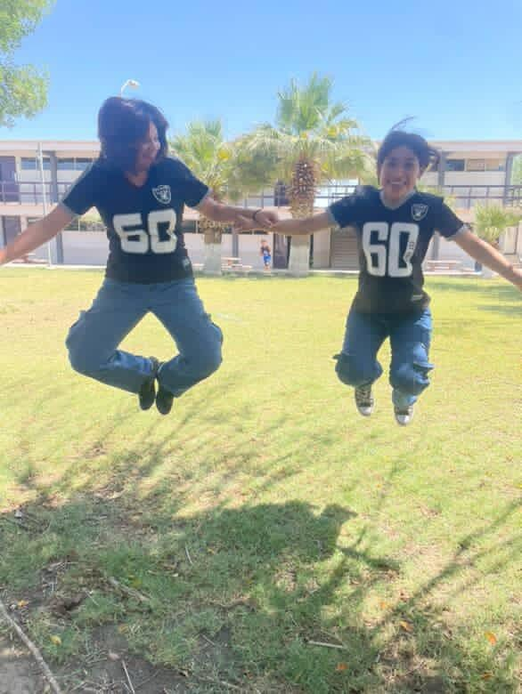

En lo personal no soy una persona de muchos amigos, pero los que tengo son a quienes les tengo muchisisimo cariño (y paciencia) Para empezar tenemos a mis amigos de la secundaria, a quienes aun estimo y quiero muchisimo, ellos son Macias y Esme. Macias aun es mi mejor amigo del mundo mundia, aunque este medio menso.

Además de ellos dos, ctualmente tengo más amigos, por ejemplo mis chicas, somos 4, Mia, Chofi, Karyme y yo. Ahora estamos en diferentes salones y nuestra comunicación es menor, pero las sigo queriendo y teniendo mucha confianza. Por cierto, el dibujo lo hizo Mia, es mi artiasta favoritas la verdad.

Cuando pase a 3ro, me encontre con Julian, ya lo conocia de antes pero no era tan cercana a el como lo soy ahora. Ahora es la Osa Mayor.

Pero la real, siempre será Karyme <3
